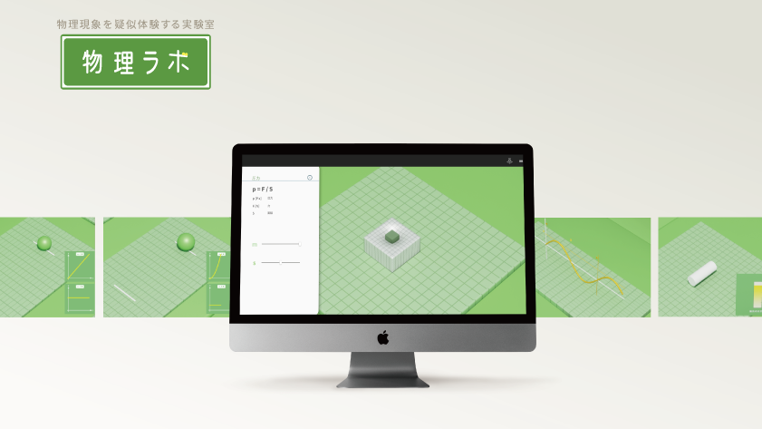
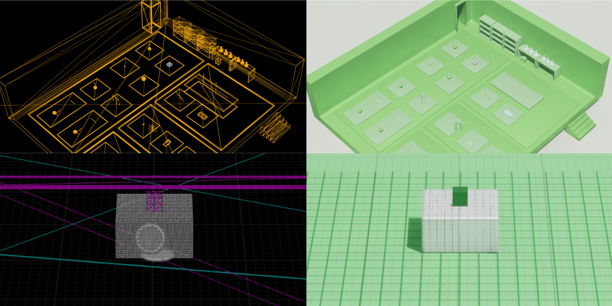
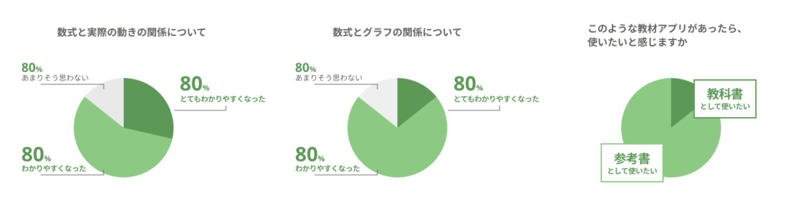

物理現象を疑似体験する実験室 "物理ラボ"

genre
UIデザイン・プロトタイプ制作
style
卒業研究
tool


season
2021.05.01～2022.02.28.
process
1month テーマの決定
｜
2month 調査
｜
4month 制作
｜
1month 検証
高校物理を題材としたエデュテイメントアプリの提案
「高校物理は数式で解く科目ではなく、絵を描いて視覚的に解く科目でもある」と提唱されているほど、状況をイメージすることが大切な科目であると言われています。
そこで、物理現象をインタラクティブに体感することができる教材があれば、物理に対して苦手意識を持っている人がその苦手意識をなくしたり、理解を促すことができると考え、高校物理を題材とした体験型教材を提案しました。物理を疑似体験することによって公式の暗記の前段階となる「想像」をサポートするとともに、状況をイメージ化して理解を深めることを目指しています。
01
About
作品について
関数を体感し、理解を促す
教材にインタラクティブ性を持たせることで、解き方を解説することだけにとどまらず、公式の暗記の前段階となる「想像」をサポートし、状況をイメージ化して理解を深めることができるのではないかと考えました。物理ラボは、勉強のスタートとして気軽に楽しく物理に触れるとともに、想像力と応用力を膨らませ公式の暗記の前段階となる、状況をイメージ化して理解を深めるきっかけづくりを目指しました。
場面⇔式⇔グラフの関係性を理解する
「ボールが転がる」「圧力がかかる」などの場面の変化をアニメーションによって表現するだけでなく、環境や与える力の大きさを使用者の操作にゆだねています。触ってインラタクティブに操作することで、その変化がどのような式やグラフで表されるかという関係性を理解することができます。
02
Process
制作
Unreal Engineによる実装
Cinema4DとUnreal Engineでモデリング・実装を行いました。数式を物理現象として表現するために、Unreal Engineで公式に基づいて物体の動きや移動量を計算するアルゴリズムを組んでいます。そのアルゴリズムを、Cinema4Dを用いて制作した3Dモデルに反映させています。

03
Inspection
検証
想像や理解を促すことにつながったのか
本研究作品により物理の理解を促すことが可能であるかを確かめることを目的として、既存の教科書との比較で検証を行いました。

結果
検証後のアンケート調査では、多くの被験者から数式とグラフの関係・数式と実際の動きとの関係がわかりやすくなったという回答を得られました。紙の資料と比較をすると、本アプリで物理現象をリアルタイムで動かすことができることによって、より直感的に状況のイメージをすることができたと感じる人が多いことがわかりました。
また、教科書を読むときの嫌悪感が減ることや、学習へのハードルが下がることなど、親しみいやすいビジュアル表現に対して、好意的な意見を得ることができました。

04
Exhibition
展示の様子
3月19日～21日の3日間、宮城大学で行われた卒展にて、作品の展示を行いました。